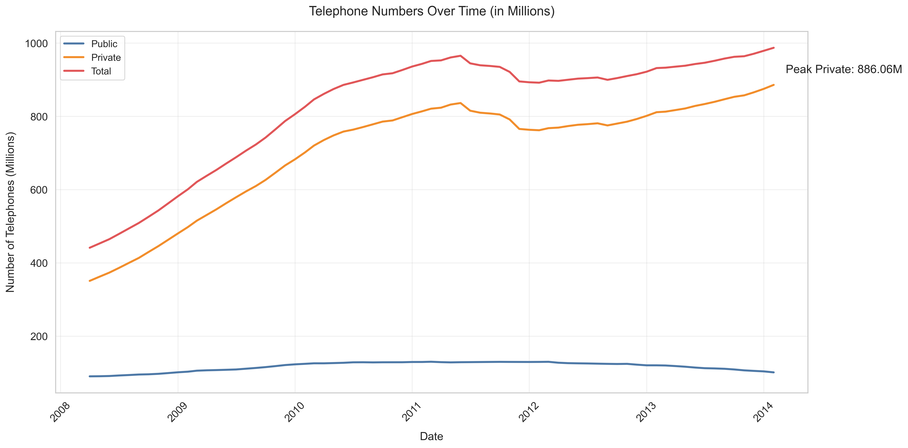
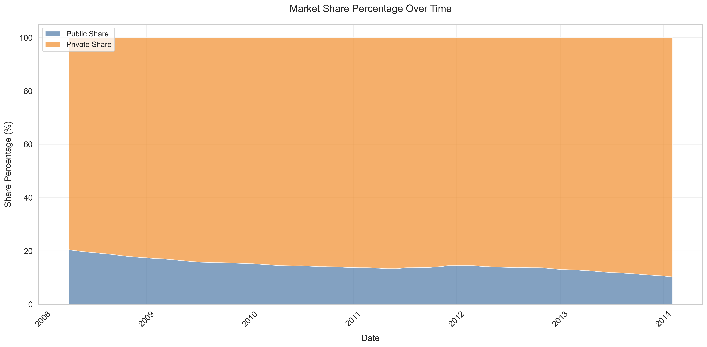
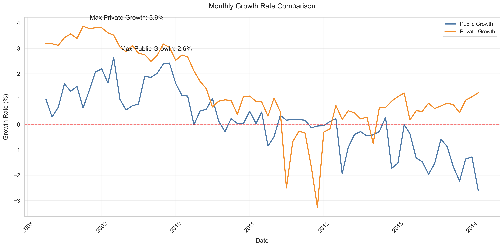
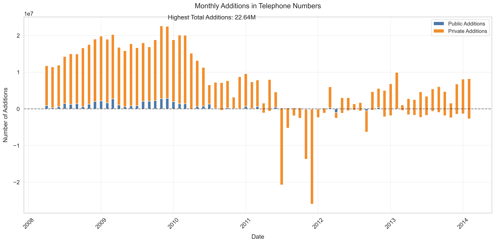
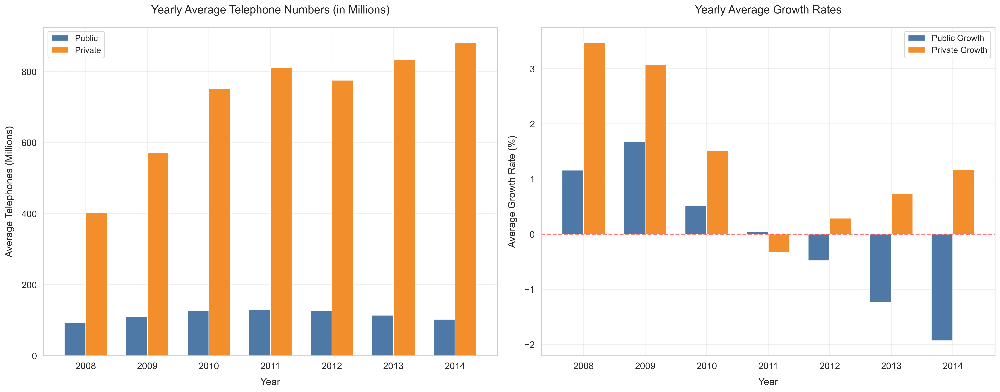
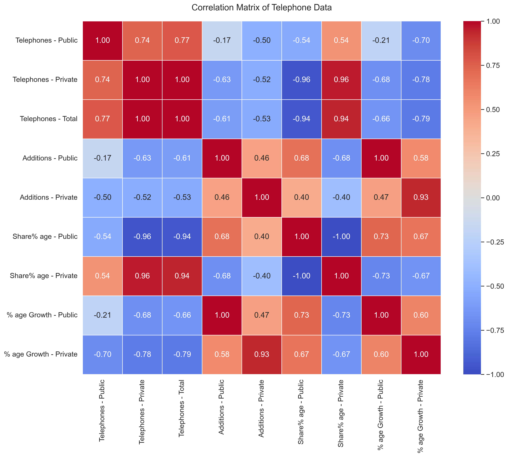
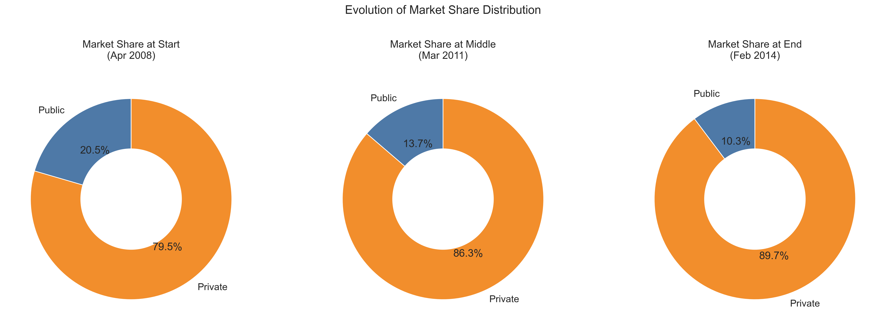
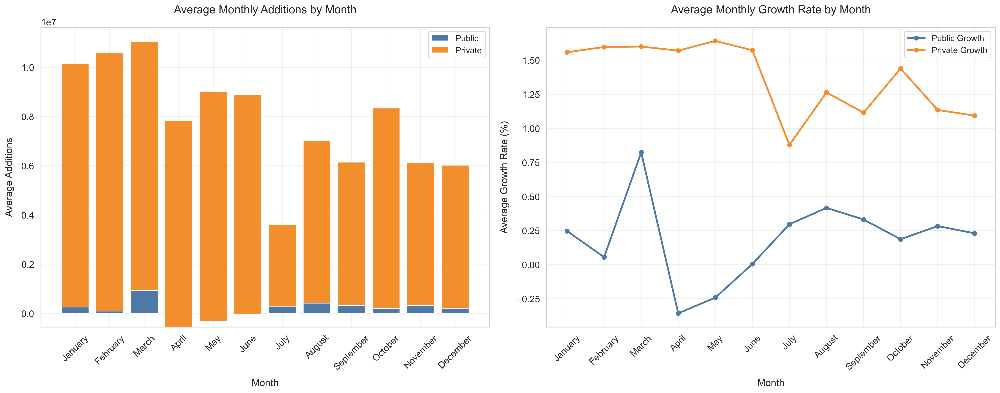

This report analyzes the trends and patterns in the Indian telecommunications sector between Apr 2008 to Feb 2014, focusing on the comparison between public and private telephone services.
This chart shows the growth in telephone numbers for both sectors.
This visualization illustrates how market share has evolved between public and private sectors.
Monthly growth rates for public and private sectors show interesting patterns.
This chart displays the number of new connections added each month by sector.
Year-by-year comparison of telephone numbers and growth rates.
This heatmap shows correlations between different metrics in the dataset.
These pie charts show the market share distribution at the beginning, middle, and end of the analysis period.
Monthly patterns in additions and growth rates reveal seasonal trends.
The telecommunications market in India showed significant growth during the analysis period, with the private sector demonstrating stronger performance and gaining market share. This suggests a trend toward privatization and increased competition in the industry.
The analysis reveals clear seasonal patterns in growth rates, which can be valuable for strategic planning. The correlation between public and private sector metrics indicates that while they compete for market share, they are influenced by similar external factors.
For a more detailed analysis and interactive visualizations, refer to the additional files in the results directory.
An interactive time series chart is available in the interactive dashboard.